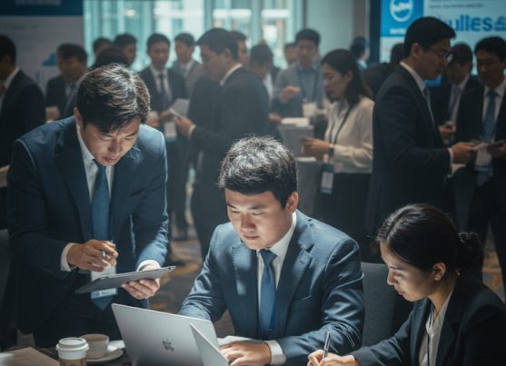
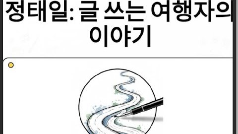
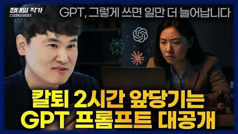
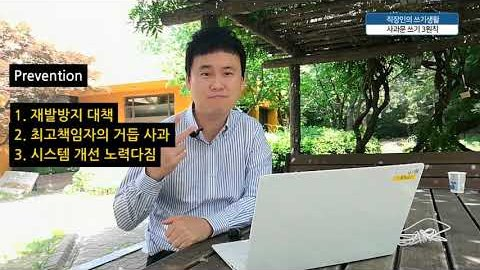
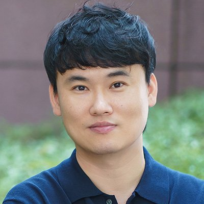
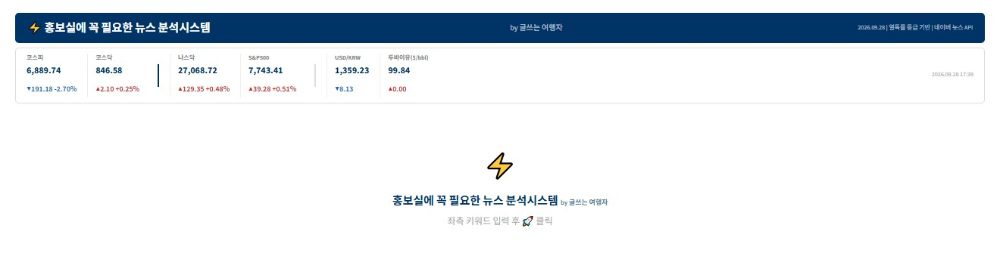
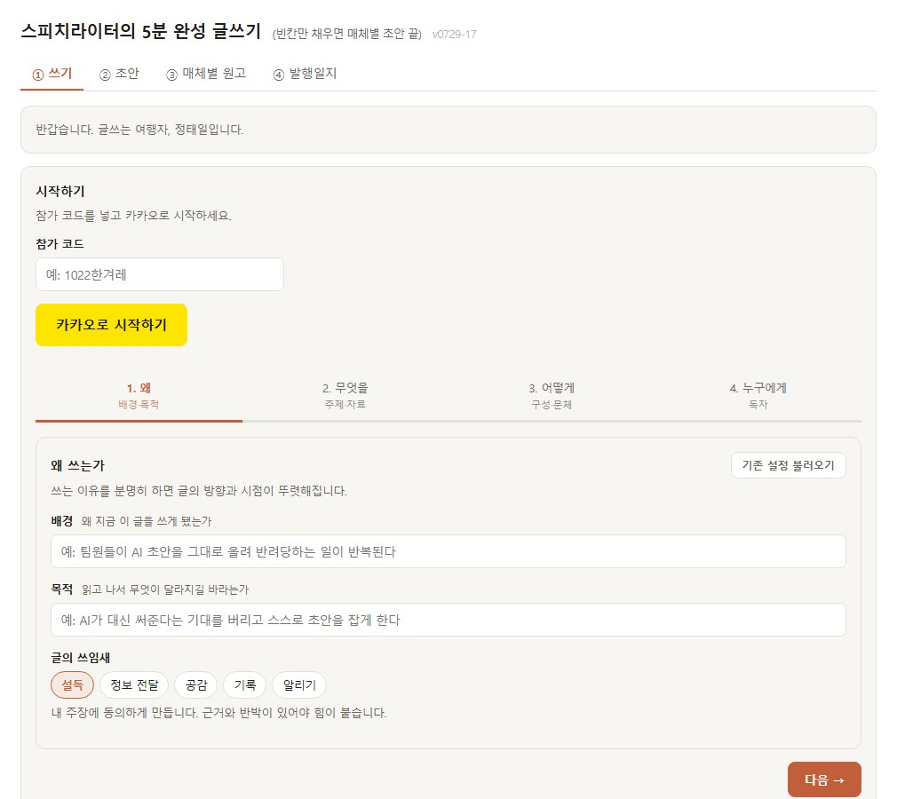

정태일 · 언론홍보 / 커뮤니케이션 / 대외협력
뼛속까지 문과로 태어나 이공계와 함께 일합니다

홍보인 데뷔 18년 차('26년 기준)
교육·식품·의약·소재화학·에너지 기업을 거치며회사의 말과 글을 다듬어 온 커뮤니케이션 전문가
난해한 기술 용어와 산업 이슈를 쉬운 말로 바꿉니다.소재·화학, 바이오·식품, 에너지·인프라처럼기술 장벽이 높은 산업에서 익힌 감각
언론과 국회·정부가 공감할 수 있는 회사의 입장을 씁니다.이해관계가 복잡한 규제 산업의 논리를 상대가 쓰는 일상 언어로
현장 노하우를 AI 도구로 자동화해 업무 효율을 높입니다.AI 라이팅 모델·뉴스 분석 시스템 개발 · 기업과 공공기관 강의
서울시립대학교
1999.03 – 2003.02 · 국어국문학과 졸업
육군 ROTC
2003.03 – 2005.06 · 중위 만기 전역
홍보대행사
2005.07 – 2007.09 · AE
EEC엘리트 (윤선생영어교실)
2007.10 – 2011.09 · 홍보실 대리
포스코퓨처엠(前 포스코켐텍)
2011.10 – 2013.05 · 경영지원 홍보그룹 대리
삼양홀딩스 (삼양그룹)
2013.05 – 2017.03 · 홍보실 과장
한국전력공사
2017.03 – 현재 · 홍보처 선임 차장·파트장
Awards & Certificates
Government Issue
Media Relations
CEO Speech Writing
AI Leadership




기업·기관 대상 강의 요청 (AI 글쓰기 · 리더의 말과 글 · 직장인의 칼럼·책 쓰기) 강의 문의 · 강의 소개서(PDF)
Case Study · Government Issue
한전의 숙원과제인 전기요금 조정. 원가 구조를 분석해 설득 논리를 세우고, 대통령·국회·정부·국민이 각자 읽는 문서로 나눠 전달했습니다.
01 · 논리 설계
경영 상황과 정책 지원 필요성을 여러 차례 전달
CEO 모두발언과 예상 질의·답변
국무총리·산업부·기후부 장관 대상
정책 현안을 일상 언어로 풀어 설명
02 · 국정감사
03 · 정책 모니터링
04 · VIP 일정
다른 사례
Case Study · Media Relations
현안이 불거지기 전에 홍보 주제와 메시지를 정하고, CEO의 이미지를 임기에 맞춰 설계했습니다. 위기 때는 C.A.P. 원칙으로 여론을 수습했습니다.
01 · P.I. 언론보도 프로세스
Before
장문 텍스트와 원가 도표로 판매단가와 구입단가 차이를 숫자로만 설명
After
“두부가 콩보다 싸다”
핵심 메시지 한 문장과 CEO 인터뷰를 묶어 요금 조정의 필요성을 기사로 전달
02 · CEO 이미지 설계
자기비판과 구조적 혁신
전국 사업소 현장 방문, 직원 간담회
워크숍·비전 선포·칼럼으로 의제 제시
국회·정부에 요금·투자 문제 설득
03 · 기획기사
04 · 출입기자단 관리
연합·YTN·뉴시스·조선·중앙·동아·한겨레·경향·한경·매경 등 핵심 매체 집중 관리
영향력 기준 자체 분류, 현안별 정기 소통
수시 자료 제공과 관계 유지
개인정보 보호를 위해 명단과 세부 내용은 공개하지 않습니다.
05 · 위기관리
국민께 심려를 끼친 데 대한 사과와 이재민 위로
성금 기탁, 특별재난 요금 감면, 한전연수원 이재민 개방, 배상위원회 즉시 구성 등 구체적 조치
지역별·계절별 취약지역을 따로 정해 집중관리
Case Study · CEO Speech Writing
포스코퓨처엠 김진일 사장, 삼양홀딩스 김윤 회장,그리고 한국전력 조환익·김종갑·정승일·김동철 사장.3개 기업 최고 경영자 6명의 메시지를 맡아 왔습니다.
01 · 과제
취임사, 신년사, 창립기념사, 추도사, 경영서신, 담화문, 사과문, 기고문까지.직원을 하나로 묶는 글과 국회·정부·언론을 설득하는 글이 같은 목소리를 내야 했습니다.
에너지·소재·화학처럼 대중이 이해하기 어려운 산업의 현안을누구나 알아듣는 말로 바꾸는 일이 모든 원고의 출발점이었습니다.
02 · 결과
Case Study · AI Leadership
스피치라이터로 일하며 매일 반복되던 일을 AI 도구로 옮겼습니다. 직접 기획하고 만들어, 홍보실 동료와 강의 수강생이 바로 쓰도록 공개했습니다.
01 · 뉴스 분석 시스템

새벽마다 서너 시간 걸리던 뉴스 스크랩을키워드 한 번으로 끝냅니다.
첫 접속 때 약간의 대기 시간이 걸릴 수 있습니다.
02 · 글쓰기 실습 도구

빈칸만 채우면 매체별 초안이 나오는실습용 웹앱입니다.
03 · 라이팅 모델
실제 CEO 말씀자료 321건을 학습시킨 맞춤형 라이팅 모델. 사장의 메시지 전략과 문체를 반영해 초안을 씁니다.
보도자료·연설문·보고서의 우수 사례와 패턴을 학습한 챗봇. 스토어의 ‘홍보·보도자료·위기관리’ 검색에서 상위에 추천됐습니다.